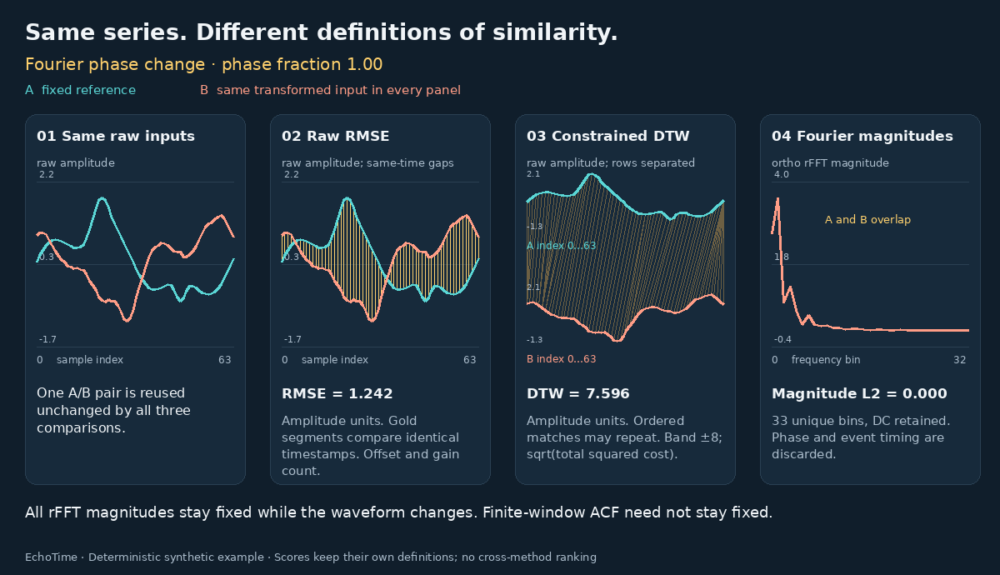

Same series. Different definitions of similarity.
Change one shared pair of time series. Then inspect what two methods actually compare: timestamps, aligned points, local changes, frequencies or coarse features. Each plot uses its own coordinates and units.
Loading 147 precomputed input states…
The shared input pair
Gold marks the inspected position, interval or block. For spectral and ACF views, each feature combines many original samples; a single timestamp has no one-to-one feature counterpart. Alignment lines show actual matched indices.
All values for this exact input pair
| Method | Value | Unit | Closer under this rule |
|---|
Three useful comparisons
- Offset → raw RMSE vs z-RMSE. Raw differences retain the offset. Separate centering and scaling can remove it completely.
- Local warp → raw RMSE vs DTW. Inspect the correspondence lines. DTW can repeat matches while respecting the band and chronology.
- Phase change → raw RMSE vs Fourier magnitude. Timing can change while every magnitude stays fixed. Identical features do not establish identical waveforms.
What is controlled
One synthetic 64-sample reference, seven transformations, 21 discrete levels each, and eleven explicit reference definitions. A and B are the same in both cards. Method parameters stay fixed while you move the slider.
The base signal contains oscillation, a broad positive peak, a short negative event and a small trend. Controlled transformations connect each formula to the information shown in its plots.
A circular shift wraps samples; SBD searches zero-padded linear shifts. The phase transformation changes only interior complex FFT coefficients. DC and Nyquist stay real and unchanged. The reversal slider mixes A with its reversal; only its final endpoint is an exact reversal.
A shareable six-transformation walkthrough
Four fixed panels: the shared raw inputs, raw RMSE, constrained DTW, and Fourier magnitudes. All frames come from the same saved calculations used above.
